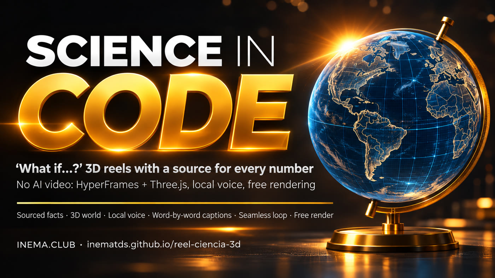

You ask the question and decide what to trust. Claude researches the sources, builds the 3D world, generates the voice on your computer, and delivers the MP4. No AI-generated images, and rendering is free.

reel-ciencia-3d is a kit with a skill for Claude Code: it turns a question like “What if Earth had no tilt?” into an approximately 60-second vertical video for Reels, Shorts, and TikTok. It’s for teachers, science communicators, and creators who want science videos without getting the numbers wrong. Everything is made with code (HyperFrames for the video, Three.js for 3D); every number appears with its source, the voice is generated on your computer, and the reel loops seamlessly. You need Node.js, ffmpeg, and Claude Code.
Science requires exact numbers. A video generator gets labels wrong, changes the chart from one scene to the next, and every fix costs credits. With code, the number on screen is the one you entered.
Before animating, Claude writes fatos.md (in Portuguese). Without a source (NASA, NOAA, Navy, university), a number doesn’t make it onto the screen or into the voiceover. Original calculations are labeled CALCULATION.
The same objects appear as today’s world and as a blue “technical blueprint” of the “what if” world. It includes a globe with real continents (Natural Earth) and just one warm color: yellow for the main subject.
The voice is generated on your computer (Chatterbox + Whisper), with timing for every word. Captions, cards, and camera movements appear at the exact moment each word is spoken.
You make four decisions: the tool, the facts, the message and visuals, and your assessment of the result. Claude and the scripts handle the rest.
Choose the question and the answer the reel needs to prove, approve the script, review the still images, and request one change at a time.
Researches and verifies sources, writes the script, builds the page and 3D world, captures review images, and assesses the MP4 using the three questions.
HyperFrames: turns an animated HTML page into an MP4. Three.js: 3D in the browser. Instrument: the fixed meter in the corner (tilt, timer). Beat: each section of the script. Technical blueprint: the blue look of the “what if” world. LUFS: the audio loudness measure used by social platforms (−14). Skill: instructions Claude Code follows automatically. Whisper: transcribes the voice and marks the timing of each word.
voz.py (voice + Whisper), montar.py (timer and captions), mezcla.py (music in code), preparar.py, and HyperFrames for review and rendering.
Rendering, voice, and music run on your computer. The only cost is your Claude plan.
HyperFrames installs itself the first time (along with the rendering browser). Music generated with code uses numpy.
node --version ffmpeg -version python3 -m pip install numpy npx hyperframes doctor # reports what is missing
instalar.sh connects the skill to both and tests the example.
git clone https://github.com/inematds/reel-ciencia-3d cd reel-ciencia-3d bash instalar.sh
voz.py uses Chatterbox (generates voice from about 15 seconds of your recorded voice) and Whisper (listens and marks the timing of each word), installed via inemavox (an open kit for local voice and transcription; follow its README, in Portuguese). Without them, use the no-voice path in step 3.
export INEMAVOX_DIR=~/inemavox # Whisper + Chatterbox worker export CHATTERBOX_PYTHON=~/miniconda3/envs/chatterbox/bin/python3 export VC_VOZ=/path/your-voice.wav # about 15 clean seconds
Replace <id> with your reel’s folder name (e.g., day-48h). The 3 examples in exemplos/ were made exactly this way.
Open Claude Code in the kit folder and paste the card from prompts/1-cartao-de-pedido.md (in Portuguese), replacing the question, answer, beats, and instrument.
# excerpt from the card Use the reel-ciencia-3d skill. Make a ~60-second vertical reel: “What if a day lasted 48 hours?” 1. Facts first. Write exemplos/dia-48h/fatos.md: every number with a source...
This is the most important decision. Read the “Left out” table: it’s where famous unsourced claims are listed. You decide what to trust.
cat exemplos/<id>/fatos.md # source + citation + date on every line
The voice is the reel’s clock: every caption, card, and camera movement follows the timing of the words. <rid> is the "id" field in roteiro.json (in the examples: terra, sol, lua). mezcla.py generates music in code and mixes it with the voice.
# create a new folder from the example (only the page and 3D code; voice and audio are generated below) mkdir -p exemplos/<id>/js cp exemplos/terra-sem-inclinacao/{index.html,hyperframes.json,package.json,roteiro.json} exemplos/<id>/ cp exemplos/terra-sem-inclinacao/js/mundo.js exemplos/<id>/js/ # edit exemplos/<id>/roteiro.json: "id", "tela" (speech → screen), and blocks b0…bN with the lines # with local voice python3 ferramentas/voz.py --projeto exemplos/<id> exemplos/<id>/roteiro.json python3 ferramentas/montar.py --projeto exemplos/<id> # → js/tempos.js (captions ready) python3 ferramentas/mezcla.py --projeto exemplos/<id> --id <rid> --musica tranquila # no voice: captions and music only (word timing is estimated from the text) python3 ferramentas/montar.py --projeto exemplos/<id> --sem-voz # displays the "end" time in seconds python3 ferramentas/mezcla.py --projeto exemplos/<id> --id <rid> --duracao <end> --musica tranquila
It updates the page copied in step 3: instrument at the top, cards with the source line, and scenes in js/mundo.js. preparar.py points the audio to the reel in that folder.
python3 ferramentas/preparar.py --projeto exemplos/<id> # engine + duration + final audio cd exemplos/<id> && npx hyperframes check # 0 errors
Reviewing an image takes seconds; fixing a finished animation takes much longer. Use timestamps that fall midway through each section of your reel (montar.py shows the end time; the sections are in js/tempos.js).
npx hyperframes snapshot --at 0,5,15,25,35,45,55,67 --no-end -o stills
Can you read everything on a phone? Is the scale honest? Is there one clear thing to look at? Request just one change at a time, keeping everything else the same.
Change only the camera for the Antarctica scene so the whole station is visible. Keep everything else. Capture the image again.
About 5 minutes for a 65-second reel on your computer.
npx hyperframes render --output renders/<id>.mp4
Check frames from the final file, not the preview. Check dimensions and volume, and follow checklists/antes-de-publicar.md (in Portuguese).
ffmpeg -i renders/<id>.mp4 -vf fps=1/3,scale=216:-1,tile=8x3 renders/folha.jpg ffprobe renders/<id>.mp4 # 1080x1920, 30 fps ffmpeg -i renders/<id>.mp4 -af ebur128 -f null - # ≈ −14 LUFS
Each has fatos.md, roteiro.json, 3D world code, voice, and audio ready in exemplos/<id>/. Create the MP4 by running npx hyperframes render inside the folder.
The format can repeat; the subject and research cannot. Every reel should teach something new.